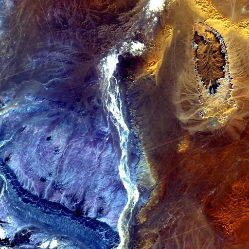

Benchmark / Near-lossless / l8-oli-8 / l8-oli-8-09
l8-oli-8-09
sahara · 2023-01-17 · sample details
Each point shows a configuration at this budget level. The line shows the best observed trade-offs. The All corpora view pools size and decode time across samples for configurations completed on every corpus with results at this level. Broken promises are listed below.
